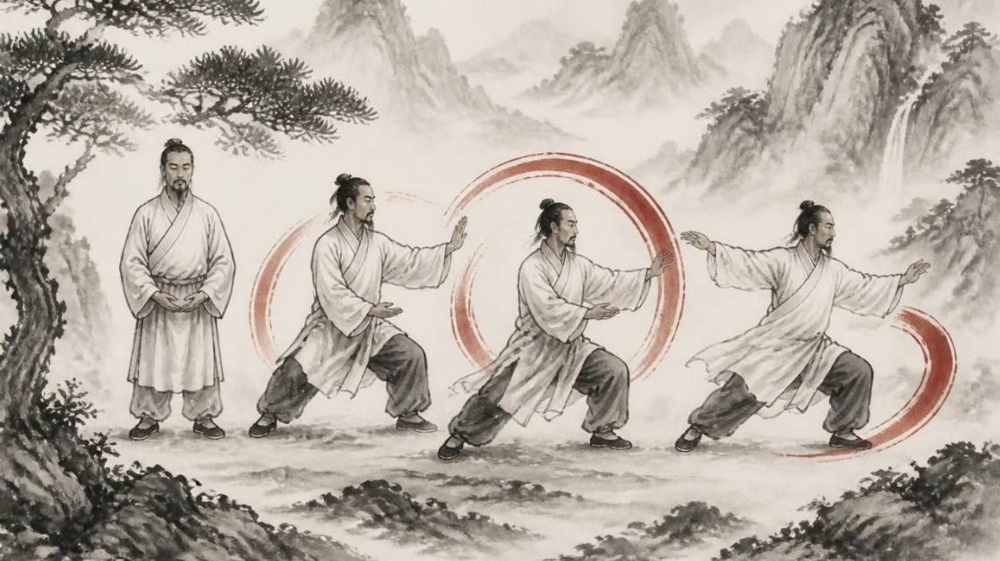

Qi Gong

Qi Gong is about becoming both soft and strong — grounded, open and resilient.
Qi Gong is a traditional Chinese practice rooted in Traditional Chinese Medicine, combining movement, breathing and awareness to cultivate and balance the body’s energy.
The word Qi is often translated as energy, and Gong as cultivation or practice, or simply work. Through gentle, flowing movements, breathing and whole-body awareness, we explore how to become more relaxed, grounded and connected.
When we spend too much time in our heads or become caught up in emotions, the body can become tense and restricted. Qi Gong offers another way: bringing our attention down into the body, slowing down and creating more space inside.
As the body softens, we may become less reactive to stress, frustration and the emotions around us. We can feel more grounded, present and free to respond rather than simply react.
Qi Gong is therefore not only about physical movement. It is also about developing a different relationship with yourself and with what is happening around you.
Through movement, breath and awareness, we create more space, softness and balance within.
← Back to my website